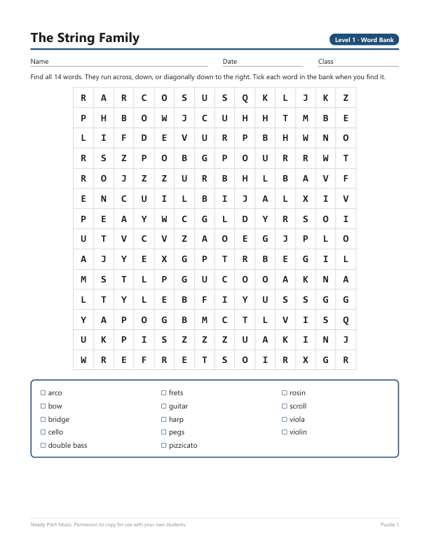
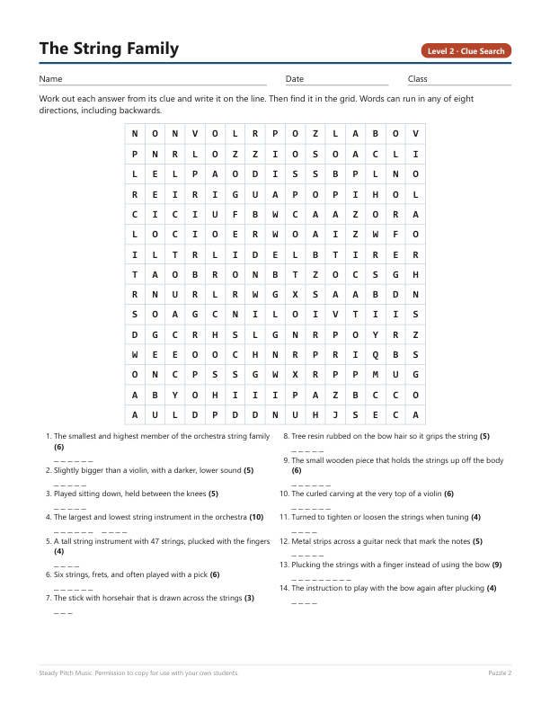

Music word searches that teach the words
Most music word searches are a list of words and a grid. Students circle violin without knowing what a scroll or a bridge is, and they learn nothing. These come in two levels. Level 1 prints the word bank. Level 2 hides it and gives a short definition for each word instead, so students work out the answer first and then hunt for it.
The sample has the string family and dynamics, each at both levels, with the answer keys. Print as many copies as your classes need.


The full pack, 32 puzzles for $5
Sixteen topics at two levels. The string family, woodwinds, brass, percussion, dynamics, tempo, notes and rests, reading music, voices and choir, Baroque and Classical composers, composers from the Romantic era to today, genres and styles, musical forms, instruments around the world, at the concert, and rhythm and meter.
Every word appears exactly once in its grid, and the filler letters were checked in all eight directions so nothing rude turns up in front of a class. Nothing on the sheet needs a music background to hand out or to mark, which is what makes it work as a music sub plan.
Same words, other formats
- Crosswords on the same sixteen topics, $4. The word bank sits on a strip you fold under for older students.
- Bingo, $5. Six games, thirty different cards each. You read the definition and the class finds the word.
- A paper escape room, $6. Six puzzles, six locks, and one of them is free to try on its page.